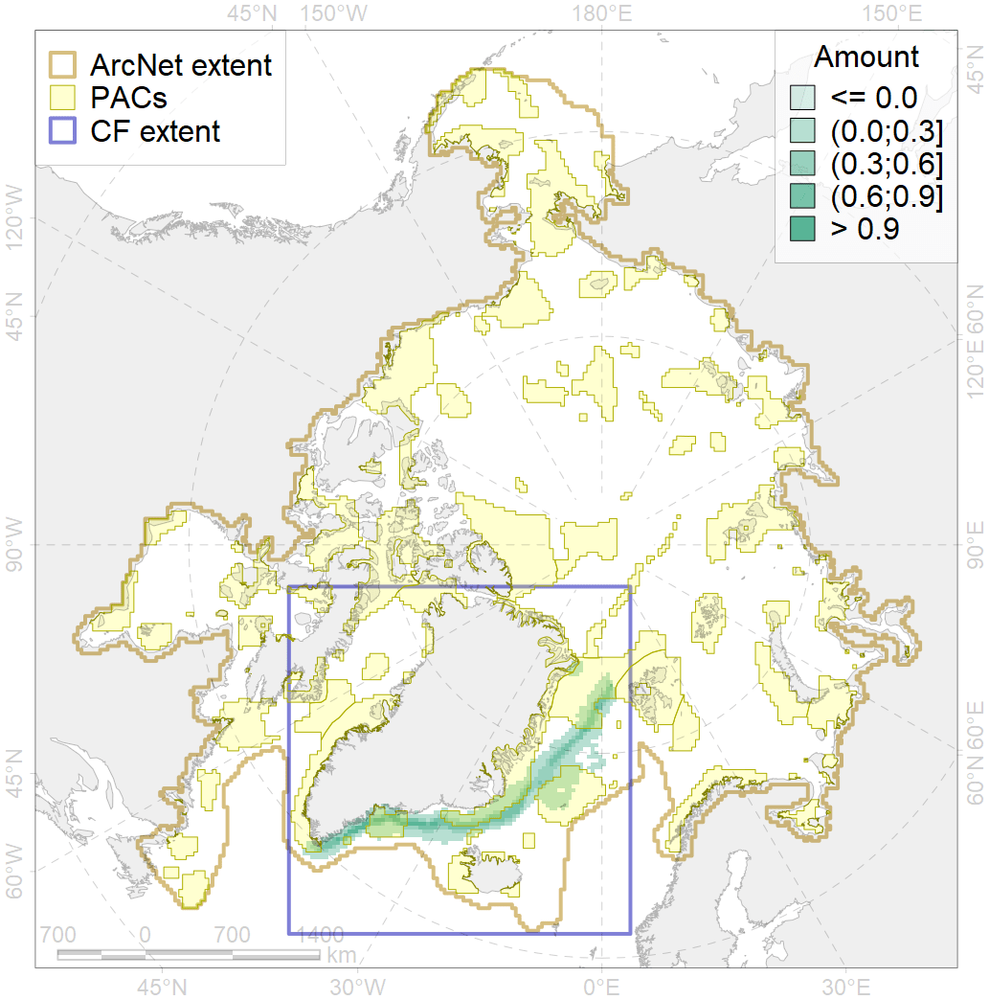
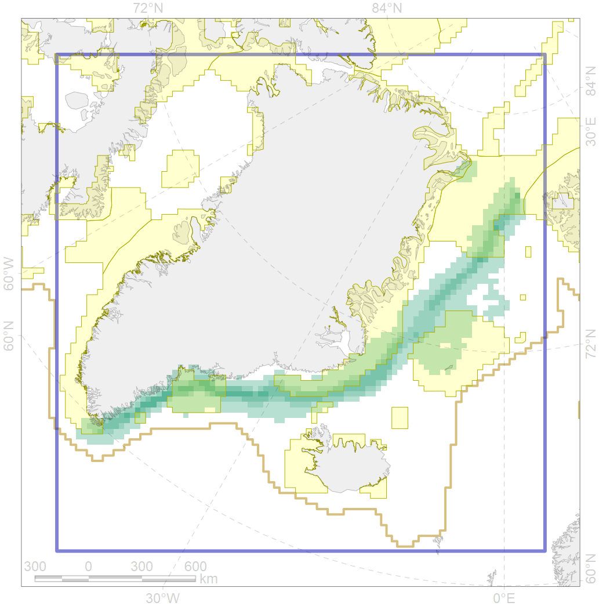

3025

| CF ID | 3025 |
| CF Name | Marginal Ice Zone distribution in April in the Greenland Sea LME |
| Time Period | 1979 - 2017, adopted for recent changes |
| Source(s) | Lavielle M. 1999. Detection of multiple changes in a sequence of dependent variables. Stochastic Processes and their Applications, 83(1): 79–102. doi:10.1016/S0304-4149(99)00023-X. |
| Seasonality | April |
| Depth Horizon | 0 |
| Methodology | Strong C, Rigor IG. 2013. Arctic marginal ice zone trending wider in summer and narrower in winter. Geophysical Research Letters, 40(18): 4864–4868. doi:10.1002/grl.50928. Lavielle M. 1999. Detection of multiple changes in a sequence of dependent variables. Stochastic Processes and their Applications, 83(1): 79–102. doi:10.1016/S0304-4149(99)00023-X. |
| Author Name | Nikita Platonov |
| Notes | |
| Conservation Target Set in the Scenario | 0.35 |
| Conservation Target Achieved in the Scenario | 0.366 (Scenario: 104.5%) |
| PAC ID | Proportion in the PAC | Contribution to ArcNet Target Achievement | PAC’s Contribution to the Achieved Target |
|---|---|---|---|
| 29 | 10.3% | 26.9% | 25.7% |
| 32 | 11.5% | 24.4% | 23.4% |
| 33 | 0.1% | 0.4% | 0.4% |
| 34 | 1.5% | 3.8% | 3.6% |
| 37 | 0.3% | 0.5% | 0.5% |
| 42 | 11.2% | 27.3% | 26.2% |
| 43 | 0.5% | 1.0% | 1.0% |
| 44 | 1.6% | 4.2% | 4.0% |
| inner | 37.1% | 88.5% | 84.7% |
| outer | 62.9% | 16.0% | 15.3% |